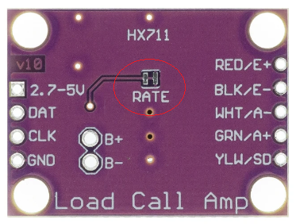
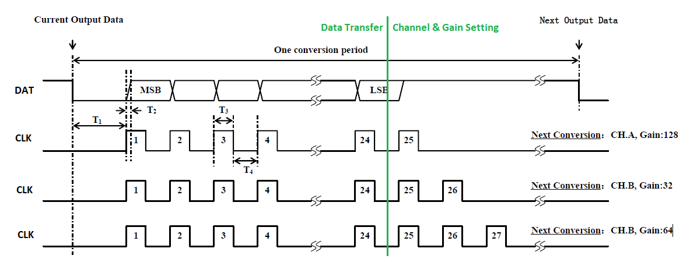

|
MD_HX711 Library 1.0
Library to interface HX711 Weigh Scales Module
|
|
MD_HX711 Library 1.0
Library to interface HX711 Weigh Scales Module
|
The HX711 can sample at 10 samples per second (SPS or Hz) or 80Hz, set by the RATE pin on the IC.
Some module boards have a jumper on the reverse side of the board to set the rate, as shown below. Connecting RATE to 1 (Vcc) sets 80Hz and 0 (GND) is 10Hz.

When power is first applied, the power on circuitry will reset the IC.
The CLK output from the processor is also used to reset the HX711 IC. CLK should LOW by the processor unless clocking during a read cycle (see below).
When CLK is
Following a reset the hardware defaults to Channel A input, gain 128.

CLK is set by the processor, DAT is read by the processor. These two digital signals make up the serial interface to the HX711.
The data is read as 24 bits clocked out, one bit per clock cycle, from the HX711. Additional clock transitions (+1 to +3) are used to set the mode for the next read cycle according to the handshaking sequence below.
| Clock Pulses | Input Channel | Gain |
|---|---|---|
| 25 | A | 128 |
| 26 | B | 32 |
| 27 | A | 64 |
Fewer than 25 and more than 27 clock pulses in one communication cycle will cause a serial communication error requiring a HX711 reset.